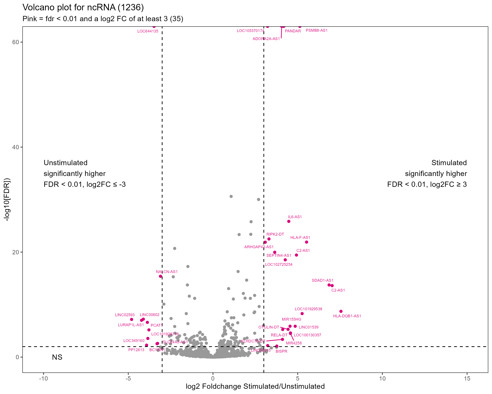

Transcriptome of Umbilical Cord-Mesenchymal Stromal Cell response to inflammation
Introduction
We have:
RNA-Seq data for donor UC-MSC stimulated or not with inflammatory cytokines
indoleamine 2,3-dioxygenase (IDO) expression measured by PCR in stimulated UC-MSC. IDO is an immunomodulatory and anti-inflammatory protein up-regulated in response to inflammatory cytokines.
ATP from stimulated or unstimulated PBMC co-cultured with UC-MSC . ATP is measure of PBMCs proliferation where high ATP indicated high proliferation and thus low PBMC suppression. Note that cells of two donors did not survive culture: P17041 and P17055
Metadata
| Sample name | Donor | Treatment | IDO response class | IDO value (PCR) | Rank of ATP values (low to high) | ATP value | ATP in control | ATP relative to control |
|---|---|---|---|---|---|---|---|---|
| S01_P17040_unstim_lo | P17040 | unstim | low | 8766 | 3 | 0.00388 | 0.0158 | 0.24576 |
| S02_P17040_stimul_lo | P17040 | stimul | low | 8766 | 4 | 0.00308 | 0.0149 | 0.20656 |
| S03_P17041_unstim_lo | P17041 | unstim | low | 6564 | NA | NA | NA | NA |
| S04_P17041_stimul_lo | P17041 | stimul | low | 6564 | NA | NA | NA | NA |
| S05_P17083_unstim_hi | P17083 | unstim | high | 56775 | 1 | 0.03342 | 0.0158 | 2.11519 |
| S06_P17083_stimul_hi | P17083 | stimul | high | 56775 | 2 | 0.01223 | 0.0149 | 0.82085 |
| S07_P17055_unstim_hi | P17055 | unstim | high | 34671 | NA | NA | NA | NA |
| S13_P14086_unstim_hi | P14086 | unstim | high | 30000 | 7 | 0.00148 | 0.0158 | 0.09365 |
| S14_P14086_stimul_hi | P14086 | stimul | high | 30000 | 3 | 0.00404 | 0.0149 | 0.27103 |
| S15_P12316_unstim_hi | P12316 | unstim | high | 30634 | 6 | 0.00263 | 0.0158 | 0.16668 |
| S16_P12316_stimul_hi | P12316 | stimul | high | 30634 | 1 | 0.01863 | 0.0149 | 1.25053 |
| S12_P17055_stimul_hi | P17055 | stimul | high | 34671 | NA | NA | NA | NA |
| S31_P16143_unstim_hi | P16143 | unstim | high | 29591 | 5 | 0.00318 | 0.0158 | 0.20121 |
| S32_P16143_stimul_hi | P16143 | stimul | high | 29591 | 7 | 0.00155 | 0.0149 | 0.10401 |
| S25_P15142_unstim_lo | P15142 | unstim | low | 3000 | 4 | 0.00358 | 0.0158 | 0.22648 |
| S26_P15142_stimul_lo | P15142 | stimul | low | 3000 | 5 | 0.00289 | 0.0149 | 0.19370 |
| S33_P16088_unstim_lo | P16088 | unstim | low | 1432 | 2 | 0.00526 | 0.0158 | 0.33287 |
| S34_P16088_stimul_lo | P16088 | stimul | low | 1432 | 6 | 0.00264 | 0.0149 | 0.17719 |
Treatment: stimulated with inflammatory cytokines or unstimluated
IDO response class: Claire’s binary classification based on IDO value. Indicates whether donor has higher or low IDO in response the stimulation
IDO value (PCR): (IDO) expression measured by PCR in stimulated UC-MSC.
Rank of ATP values (low to high): Rank of ATP value within treatment group. 1 = lowest PBMC suppression (highest ATP) , 7 = highest PBMS suppression (lowest ATP)
ATP value: in stimulated or unstimulated PBMC co-cultured with UC-MSC; low ATP indicates donor UC-MSCs suppress PBMC well , high ATP indicates donor UC-MSCs poorly suppress PBMC
ATP in control: in stimulated or unstimulated PBMC alone
ATP relative to control: ATP value/ATP in control:
Questions
Is there a different in the transcriptome between donors that had a high IDO response and those that had a low IDO response where the IDO expression was PCR’d
are there differences between these higher-responders and low-responders
if yes, how are theses differences characterised
is there a correlation between measured IDO and and IDO transcripts
Is there a different in the transcriptome between that had a low ATP (weak PBMC suppression) and those that had a high ATP (strong PBMC suppression)
are there differences between weak and strong suppressers
if yes, how are theses differences characterised
is there a correlation between measured IDO and and PBMC suppression
We can examine the difference between stimulated and unstimulated (averaging over the patients) and the difference between patients (averaging over the treatments) but not whether the effect of the stimulated differs between patients as we do not have within treatment-patient replication.
We can examine the difference between higher-responders and low-responders in the stimulated and unstimulated groups.
Methods
Counts for each transcript were summed across samples and those with fewer than 2 were removed leaving 25324 genes. For exploratory analysis counts were converted to Transcripts Per Million (TPM), a normalization method (the number of transcripts per 1,000,000 RNA molecule). It allows some comparison in expression between genes in within a sample. The variance in TMP across samples was calculated.
DESeq2 (Love, Huber, and Anders 2014) was used for differential expression. It uses a robust normalisation method based on the negative binomial distribution, with variance and mean linked by local regression [@]. This makes it possible to compare the expression of the same gene among samples.
Exploratory analysis of the read count table
PCA
Performed on \(log_2(TMP + 1)\) for 25324 genes to visualise sources of variation. Clear separation of treatment groups on PC1, possibly some separation of donors on PC2. P17040 and P17041 appear ore similar; P14086 and P15142 appear more similar. Note P17041 cells did not survive culture.

We can consider pairwise plots of the the first 6 PC (67% variance) to see any separation between donors more clearly. PC3 separates P17083 and PC5 separates P14086 (which we saw in the above
Clustering on TPM using the 100 most variable genes
Notes: the most variable genes may not be the most important, for example, they may not have the great FC between comparisons

Is there a different in the transcriptome between donors that had a high IDO response and those that had a low IDO response?
| IDO Response class | mean IDO | std dev |
|---|---|---|
| low | 4940.5 | 3333.93 |
| high | 36334.2 | 11604.72 |
Differential expression
class: DESeqDataSet
dim: 25324 18
metadata(1): version
assays(1): counts
rownames(25324): ENSG00000000003 ENSG00000000419 ... ENSG00000289634
ENSG00000289637
rowData names(0):
colnames(18): S01_P17040_unstim_lo S02_P17040_stimul_lo ...
S33_P16088_unstim_lo S34_P16088_stimul_lo
colData names(9): names donor ... ATP_PBMC ATP_normPerforming differential expression analysis between low and high responders gives 13049 comparisons (meaning 25324 - 13049 = 12275 gave NA for p values)
The gene types of the tested genes are distributed as follows:
| GENETYPE | n |
|---|---|
| ncRNA | 908 |
| protein-coding | 9094 |
| pseudo | 241 |
| NA | 2806 |
NA means they are not annotated.
An indicator was added for significant genes: those with FC >=0 and FDR <=0.05. FDR values less then 1e-50 were set to 0 (for plotting)
The gene types of the tested genes are distributed as follows:
| GENETYPE | sig | n |
|---|---|---|
| ncRNA | FALSE | 906 |
| ncRNA | TRUE | 2 |
| protein-coding | FALSE | 9092 |
| protein-coding | TRUE | 2 |
| pseudo | FALSE | 241 |
| NA | FALSE | 2804 |
| NA | TRUE | 2 |
There are very few differentially expressed genes between high and low responders.
Is there a correlation between measured IDO and and IDO transcripts?
---
Correlation between IDO and ATP
Differential Expression between stimulated and unstimulated cells



Qs for Claire
The ATP values have many - is this a genuine reflection of precision?